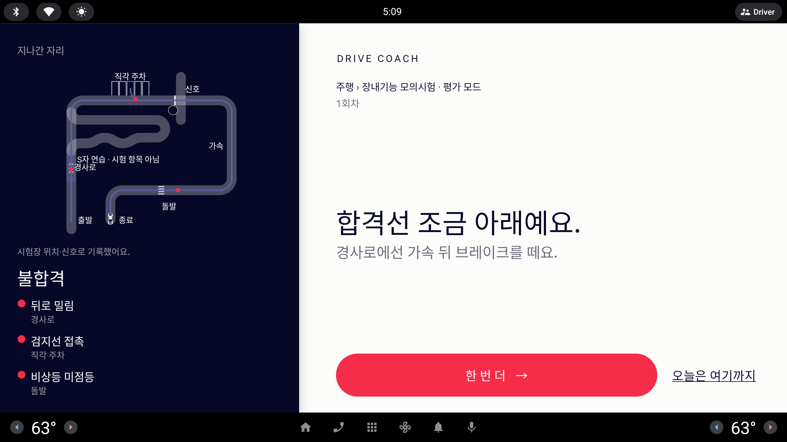

라운드 21 시안 · 6
주차 결과 — 시험장 시뮬레이션처럼 어둡게
주차 Done 화면 왼쪽의 "추정 궤적"을 코스 Done 과 같은 컨셉(짙은 Ink 바탕 · 회색 노면 · 흰 칸 줄 · Periwinkle 목표 칸 · 위에서 본 차)으로 바꾸고, 크기를 지금 포함 세 가지로 보여 준다. 세 시안 모두 같은 회차(후면 직각 주차 · 다시 넣음 · 급정지 · 살짝 비뚤게 끝남)를 그린다. 오른쪽(회차 멘트 · 한 번 더 · 오늘은 여기까지)은 그대로.
"흰 바탕에 색상있는 차와 궤적으로 포인트를 주었지만 아래 기호 점검 섹션과의 이격이 신경쓰여서 주행 시뮬레이션 진행할 때는 짙은 바탕에 도로와 차를 넣어서 시험장 시뮬레이션을 보여줬는데 같은 컨셉으로 크기는 기존 포함하여 3가지 정도 다양함을 제시 받아 진행하고 싶어"시안 = 화면 1/3 축소(853×423) · 실제 화면은 약 3배
지금


시안 A
그대로 왼쪽 38%
지금 자리·크기 그대로, 흰 바탕만 시험장처럼 어둡게 바꾼다.
장점
- 지도와 판정 패널이 한 Ink 면이 돼 위아래 이격이 사라진다.
- 레이아웃 변경 없음 — 바탕·칸 줄·차 그리기만 바뀐다(가장 쉬움).
- 오른쪽 멘트·알약 위치와 폭이 지금과 같다.
주의점
- 궤적이 가장 작다 — 다시 넣은 구간과 빨간 점이 촘촘히 붙어 보인다.
- 운전 중 화면은 아니지만(정차 후), 운전석에서 한눈에 읽기엔 차가 작은 편.
- 구현: 주차장 바닥(통로·칸 줄) 그리기 새로 추가 — 낮음~중간.
시안 B
넓게 왼쪽 50% · 판정 두 칸
왼쪽을 절반으로 넓혀 지도를 키우고, 판정 네 줄은 아래에 두 줄 두 칸으로 접는다.
장점
- 궤적·다시 넣은 구간·빨간 점이 또렷하다 — 차가 지금보다 약 1.3배.
- 코스 Done 처럼 왼쪽 Ink 패널이 큰 면이 돼 두 결과 화면이 한 가족으로 보인다.
- 판정 네 줄이 지도에 가리지 않고 그대로 다 보인다.
주의점
- 오른쪽 멘트 폭이 줄어든다 — 지금 문장은 두 줄 그대로 들어가지만 더 긴 멘트는 줄바꿈 가능.
- 판정이 두 칸이 되면 읽는 순서(왼→오, 위→아래)가 생긴다.
- 구현: 면 분할 비율 + 판정 2×2 배치 변경 — 중간.
시안 C
히어로 왼쪽 50% · 전체 높이
지도가 왼쪽 전체 높이를 채우고, 판정 네 줄은 지도 아래쪽 반투명 Ink 띠 위에 얹는다.
장점
- 시험장 한 장면처럼 보인다 — 가장 몰입감 있고 차가 가장 크다.
- 판정이 지도 위에 얹혀 "두 섹션 사이 이격" 자체가 없다.
- 띠 아래로 통로·아래 칸 줄이 이어져 공간감이 생긴다.
주의점
- 띠 아래 칸 줄이 비쳐 판정 글자 대비가 떨어질 수 있다 — 띠 불투명도 .85 이상 필요.
- 궤적이 아래로 길게 내려오는 과제는 띠에 가릴 수 있어 과제마다 시점(확대 범위)을 맞춰야 한다.
- 구현: 겹침 배치 + 과제별 시점 — 중간~높음.
추천 시안으로 본 다른 회차
B · 평행 주차 잘함
도로 옆 평행 칸(연석 쪽)으로 한 번에 들어간 회차. 다시 넣은 구간·빨간 점이 없으면 궤적은 Periwinkle 한 줄만 남는다.
확인할 것
- 평행 주차는 칸이 도로를 따라 놓여 통로 대신 2차로 도로를 그린다(가운데 점선).
- 목표 칸 Periwinkle 면 + 차(Paper)가 어두운 바탕에서 가장 먼저 눈에 띈다.
- 캡션 "신호로 추정한 궤적이에요. 실제 위치와 다를 수 있어요." 는 모든 시안에 그대로.
추천
B · 넓게 — 이격을 없애면서 궤적을 키우고, 판정 네 줄을 가리지 않는 가장 안정적인 선택.
A 는 이격만 해결하고 크기는 그대로, C 는 가장 멋지지만 판정 대비와 과제별 시점 조정이 부담이다. B 의 비율(왼쪽 50%)은 코스 Done 의 지도 패널과도 맞는다.